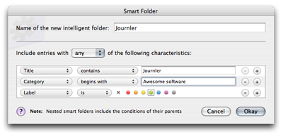
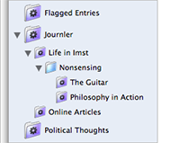

Smart Folders & Smart Families
Smart Folders & Smart Families
Looking for information about regular folders instead? Read about regular folders.
Creating Smart Folders
Select New Smart Folder from the folder worktool button at the bottom left of the window to create a new folder. The smart folder dialog appears, your workcenter for specifying which entries Journler includes in the folder.
A smart folder may include any number of conditions, but between one and four are recommended. Add and remove conditions using the plus and minus buttons as needed.
Set a condition's targeted attribute by selecting one of the options from the popup at the left. Your remaining choices will be modified to reflect the nature of that property.
Because text is interpreted as a whole, use words sparingly when testing against the title, category or keywords of an entry. For example, if an entry's title is "My Journler Entry" and you enter "My Entry" for the criterion's title, the entry will not show up in the folder. You may change how the condition is applied, ie is, contains or begins with, but words you place together must be one next to the other in an entry for a match to occur.
On the other hand, text conditions are not case sensitive and ignore diacritical marks. "My Journler Entry" is the same as "my journler entry," "My journler entry" or "My Jöürnler Entry." Punctuation is permitted but you should not include apostrophes or quotation marks.
Auto-tagging
Take advantage of the power of smart folders without tagging your entries manually. Auto-tagging allows you to modify an entry's metadata such as title and category just by dragging the entry into a smart folder. Add your entries to a smart folder like you do a regular folder and Journler alters the entry so that it matches the folder's criteria.
You may also take advantage of auto-tagging when creating a new entry or importing a file. Select the smart folder that should include the entry or choose the folder from the folder popup in the New Entry or Import dialog.
Not all folder criteria support auto-tagging. Text properties such as title, category and keywords are supported as well as label and marking. Dates are not supported and neither are blogs, attached media or the actual contents of the entry. When Journler auto-tags an entry the fewest possible attributes are modified. Smart folders with the any option selected will often use only the first condition when altering an entry.
Smart Families
Smart families are smart folders inside one another and occur automatically whenever you create subfolders. They are a Journler first and a powerful way to organize your entries. Two rules govern the actions of smart families:
1. A family's smart subfolders only match the entries that are also matched by its parents.
2. Regular folders do not change the interaction between other folders in a family in any way.
Let's look at an example.
 In the setup to the right, the Journler folder is the head of a family. Its single condition, "title contains journler," affects every smart folder contained within it. That condition does not, however, affect any of the regular subfolders.
The first child folder is Life in Imst, whose single condition is "category contains 'imst'". Normally, the Imst smart folder would match any entry whose category includes the word "Imst", but because it is inside the Journler folder, it also takes on that folder's conditions. Life in Imst now collects only those entries whose title contains journler and whose category contains imst.
The same applies to the Online Articles folder whose single condition is "category contains 'online article'".
Nonsensing is a regular folder, so it contains any entries you want without affecting or being affected by any member of the family, neither its parents nor its children. It doesn't matter that this folder is underneath Life in Imst, which in turn is the child of Journler. Regular folders in a family have complete freedom.
If a smart folder is inside a regular folder, it will look through the regular folder for any additional smart parents. Thus the Guitar folder, whose condition is "keywords contains guitar," will only match those entries with 1) guitar in the keywords, 2) imst in the category and 3) journler in the title. It has a smart grandparent and a smart great-grandparent, and so takes on the conditions of both.
Read about Journler's other folders